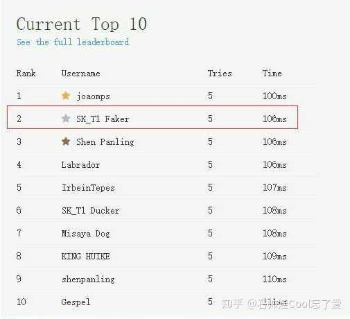

Faker 你可能不知道的事
1
反應速度 106ms
Faker反應速度106ms，接近人類極限

2
請客隊友趣事
請隊友喝可樂，但是五人喝一罐
3
節儉但熱愛做公益
年收入破億，一個月只花約5000元左右，且常年捐款
4
常遲到
被隊友爆料很常遲到
5
第一次掏錢買貴衣服
被隊友小花生慫恿買300美元的衣服，在直播抱怨太貴
6
對水的執著
每局比賽結束都會把水喝完
7
喜歡企鵝
Faker與隊友在一次出遊展現對企鵝的喜愛
8
多才多藝
Faker 會彈鋼琴與唱歌
9
世界賽未輸給 LPL
Faker 世界賽對戰 LPL BO5 大場 13-0
10
接班人是自己
T1 Faker 的世界賽勝場與冠軍正式超越 SKT Faker